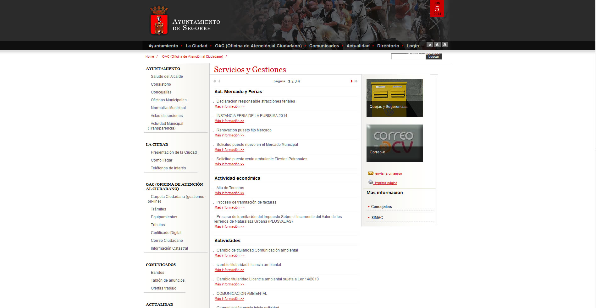

	
		
<div style="margin-top:50px;">
	<div class="container-fluid">
	
		<div class="col-xs-12 col-sm-2 col-md-2 col-lg-2">
			<h2 id="project-title">Ayuntamiento de Segorbe</h2>
			<p id="project-client">Página institucional del Ayuntamiento de Segorbe</p>
			<p id="project-tags">eBD, jQuery, CSS</p>
			<p id="project-tags">Colaboración en eBDSoft</p>
		</div>
		<div class="col-xs-12 col-sm-3 col-md-3 col-lg-3">
			<p>Web institucional del Ayuntamiento de Segorbe</p>
			<p> Desarrollo basado en eBD y eBDML.</p><p> Dispone zona de administración</p>
		</div>
		<div class="col-xs-12 col-sm-7 col-md-7 col-lg-7">
				<div class="thumbnail"></div>
		</div>
	</div>
</div>

